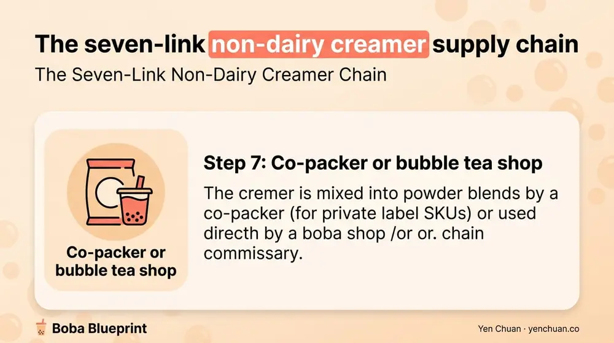
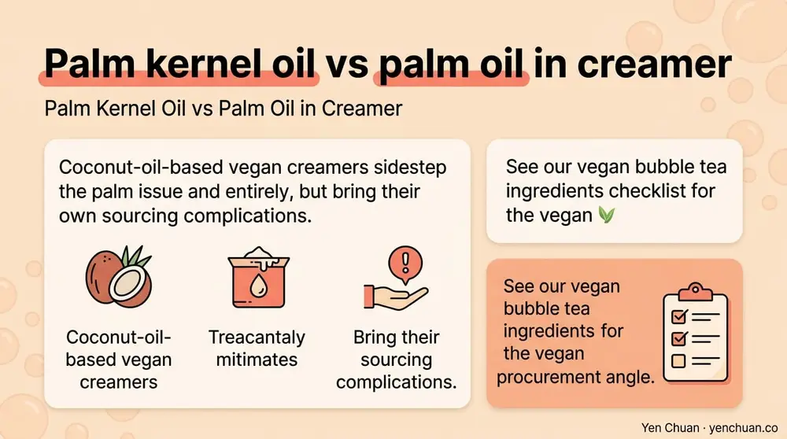

文章 / 經營與採購
RSPO Non-Dairy Creamer Supply Chain Guide
這篇是英文原文，尚未完成繁體中文翻譯。中文選單與相關商品連結不會切回英文介面。

查看英文原文（尚未翻譯）
A bubble tea customer in Los Angeles drinks a milk tea made from creamer mixed in Taiwan, refined in Malaysia, pressed from palm fruit grown in West Kalimantan. Seven parties handle the palm oil between the plantation and the cup. Each handoff is where certification can slip, documentation can break down, or deforestation risk can hide in plain sight.
This article maps that full chain — plantation, mill, refinery, creamer manufacturer, distributor, co-packer, and retail — and shows which documents should change hands at each step under an RSPO certified program. The goal is practical: when a retailer or EU regulator asks where the palm oil in your creamer came from, you should be able to answer in one email with attached certificates.
The Seven-Link Non-Dairy Creamer Chain
A typical certified non-dairy creamer sold into bubble tea follows seven distinct steps. Each has its own audit requirements.
Step 1: Plantation. Oil palm (Elaeis guineensis) is grown on plantations in Indonesia, Malaysia, Thailand, and a small but growing volume in Colombia and Guatemala. RSPO certified plantations operate under the Principles and Criteria, covering deforestation, peatland, High Conservation Value areas, worker rights, and community consent. Geolocation data down to individual plots is now standard for EUDR readiness.
Step 2: Mill. Fresh fruit bunches are processed into crude palm oil (CPO) and palm kernel oil (PKO) within 24 to 48 hours of harvest. Mills are the first point at which certified and non-certified palm fruit can be mixed. An RSPO certified mill keeps the two streams separate under Segregated or Identity Preserved models and issues palm oil supply certificates tied to each shipment.
Step 3: Refinery. Crude oil is refined, bleached, and deodorized (RBD) into food-grade palm and palm kernel oil. Refineries in Malaysia, Indonesia, Singapore, and Thailand serve the global market. Refinery certification is the critical weak link in many supply chains — a non-certified refinery can contaminate certified oil even if the plantation and mill upstream are certified.
Step 4: Fractionation. Palm oil is separated into stearin (solid fat for hydrogenation alternatives), olein (liquid cooking oil), and palm kernel oil fractions used in creamer. Only certified fractionation plants can maintain RSPO status.
Step 5: Creamer manufacturer. The palm kernel oil or RBD palm oil is spray-dried with a carrier (corn syrup solids, maltodextrin, or tapioca), protein (sodium caseinate or plant alternatives), and emulsifiers. This is where the finished non-dairy creamer SKU is created. A creamer plant must hold its own RSPO Supply Chain Certification.
Step 6: Distributor. Creamer ships to regional distributors serving bubble tea supply networks. At this stage, mass balance calculations determine whether a specific invoice is certified.
Step 7: Co-packer or bubble tea shop. The creamer is mixed into powder blends by a co-packer (for private label SKUs) or used directly by a boba shop or chain commissary.

Where Certification Slips in Practice
Certification failures in the non-dairy creamer chain follow predictable patterns. Four failure modes account for the majority of audit issues:
Refinery-level mixing. A creamer manufacturer buys Segregated RSPO oil from its refinery, but the refinery has downgraded to Mass Balance mid-year without informing customers. The creamer is sold as Segregated on the label; the upstream material is now MB. This is the single most common finding in annual RSPO audits.
Sub-supplier opacity. The creamer manufacturer is RSPO certified, but the emulsifier or mono-diglyceride supplier is not. Since emulsifiers can be palm-derived, the finished product's certification scope may not cover 100% of palm content. Buyers who ask only about the primary palm oil miss this.
Shipment mismatch. The supplier's overall annual volume is certified, but a specific shipment in a given quarter draws from non-certified inventory due to demand spikes. Without per-batch documentation, the buyer has no visibility.
Chain of custody gaps. Paperwork travels through email attachments and shared drives. When certificates expire or get replaced, older batches lose traceability. Retailer auditors asking for 2024 shipment documents in 2026 often find broken chains.
Operators running EUDR-compliant programs must map and plug these gaps. The EU Deforestation Regulation requires a due diligence statement for every shipment entering the EU, with geolocation coordinates for the plantation of origin. Mass Balance documentation is explicitly insufficient.
Geolocation and Traceability in 2026
EUDR and growing U.S. and U.K. interest have pushed geolocation from nice-to-have to essential. Plantation coordinates are now captured as polygon shapefiles, not single points, which means a certified supplier must hold GIS data for each source plot feeding the refinery for your order.
Traceability platforms widely used in the industry include:
- Trase.earth — open-source commodity flow mapping
- RSPO PalmTrace — member-facing supply chain volume tracking
- Earthqualizer, Satelligence, Nusantara Atlas — third-party monitoring platforms that satellite-check deforestation in supplier supply sheds
Buyers requesting EUDR-ready documentation should ask which platform the supplier uses and whether polygon data is available per shipment. A supplier still running manual spreadsheet tracking in 2026 is a red flag for regulated-market programs.
Cost Impact at Each Supply Chain Stage
Where does the certification premium actually land? A breakdown of the cost structure from plantation to creamer factory gate:
| Stage | Certification Premium Contribution |
|---|---|
| Plantation & mill | 2–4% (ongoing audit, community programs, conservation set-asides) |
| Refinery | 1–3% (segregated storage, separate production runs) |
| Fractionation | 0.5–2% (dedicated lines, tracking) |
| Creamer manufacturer | 1–3% (SCCS audits, documentation, batch testing) |
| Distributor | 0–1% (traceability and reporting systems) |
| Total factory gate | 5–13% over non-certified |
This matches the Segregated model range quoted in most supplier pricing. Identity Preserved adds another 3 to 5%. Mass Balance drops the total to 3 to 8% because some segregation costs are avoided.
Independent boba shops buying a few hundred kilograms of creamer monthly see per-cup impact of roughly 1 to 2 U.S. cents — immaterial at the $6 retail price point. For chain commissaries buying tens of tonnes, the annual total can run $50,000 to $300,000, which is why major chains negotiate Segregated volume commitments rather than pay spot pricing.
For a head-to-head comparison against non-certified creamer, our RSPO vs Non-RSPO creamer analysis breaks down performance, cost, and market access by model.
Palm Kernel Oil vs Palm Oil in Creamer
Not all palm is equal. Non-dairy creamer typically uses palm kernel oil (PKO) rather than palm oil (PO) because PKO has a higher melting point and produces a firmer, more stable fat crystal for spray-drying. Some creamer formulations use hydrogenated palm oil instead.
RSPO certifies both PKO and PO, but the supply chains run separately. A mill producing certified palm oil is not automatically producing certified palm kernel oil. Buyers should confirm which input their creamer supplier uses and verify the specific stream is certified.
Hydrogenated PKO raises an additional flag in clean label procurement. For buyers running both RSPO and clean label programs, our clean label beverage ingredients guide covers the hydrogenation issue in detail.
Coconut-oil-based vegan creamers sidestep the palm issue entirely but bring their own sourcing complications. See our vegan bubble tea ingredients checklist for the vegan procurement angle.

Documentation That Flows With Each Shipment
A mature RSPO non-dairy creamer program generates paperwork at every link. A buyer requesting the full set should receive:
- Plantation-level geolocation (polygon shapefiles or GeoJSON)
- Mill-level RSPO certificate and traceability declaration
- Refinery SCCS certificate and supply chain model declaration
- Fractionation plant certificate (if relevant)
- Creamer manufacturer SCCS certificate and batch-specific certificate of conformity
- Distributor mass balance report for the shipment quarter
- EUDR due diligence statement signed by the importing entity
Suppliers who cannot produce these within five business days of request are unlikely to survive a first EUDR audit. Those who can are worth long-term supply contracts, because the documentation infrastructure is expensive to build and hard to fake.
For operators vetting their first RSPO supplier, our RSPO supplier directory and procurement checklist walks through the supplier-level questions to ask before signing. For broader ingredient sourcing, our milk tea supplier guide covers the wider quality and pricing workflow.
What to Do Now
Three actions for operators preparing supply chains for 2026 and beyond:
- Map your current creamer chain end to end. Most buyers can name their creamer supplier but not the refinery, mill, or plantation. Ask upstream.
- Request EUDR documentation even if you do not currently export to the EU. The documents are harder to assemble retroactively, and major U.S. retailers are beginning to mirror EUDR requirements.
- Lock a Segregated or Identity Preserved supply contract before EUDR enforcement begins. Segregated capacity in the refinery and creamer-manufacturing sector is limited; late movers will pay scarcity premiums.
The non-dairy creamer supply chain is not glamorous, but it is increasingly auditable. Operators who treat it as a compliance workflow, not a commodity purchase, are the ones keeping retail doors open through 2026 and 2027.
Sources
- RSPO Principles and Criteria 2018
- EU Deforestation Regulation (EUDR)
- Trase.earth commodity supply chain mapping
- World Wildlife Fund: Palm Oil Buyers Scorecard
- Grand View Research: Non-Dairy Creamer Market Report 2024
About Yen Chuan
Yen Chuan has been at the heart of Taiwan's bubble tea industry for over 20 years, supplying premium powders, syrups, tapioca pearls, and tea leaves to thousands of boba shops worldwide. With an in-house R&D lab and a commitment to quality ingredients, Yen Chuan is more than a supplier — we're your partner in the boba business. Our RSPO certified non-dairy creamer program ships with full chain-of-custody documentation from plantation geolocation through refinery and manufacturing, and our team supports EUDR readiness for European importers.
Need an RSPO creamer supplier who can send you the full plantation-to-cup document dossier? Browse our RSPO non-dairy creamer and vegan creamer catalog or contact our sourcing team — we will deliver certificates, geolocation data, and EUDR due diligence statements on request.
Frequently Asked Questions
Q: Why is palm oil in non-dairy creamer? A: Palm kernel oil and palm oil give non-dairy creamer its creamy mouthfeel, high melting point, and spray-drying stability. Palm-derived fats are cheaper and more temperature-stable than dairy fat, which is why they dominate the non-dairy creamer category.
Q: What is EUDR and does it affect bubble tea? A: The EU Deforestation Regulation requires palm oil entering the EU to trace back to plantation geolocation, with no deforestation after December 31, 2020. Bubble tea products containing non-dairy creamer are in scope; enforcement begins December 30, 2026 for large companies and June 30, 2027 for small and medium enterprises.
Q: How far back can I trace my creamer's palm oil? A: With Identity Preserved RSPO certification, you can trace back to a single plantation with polygon geolocation. With Segregated, to a group of certified mills. With Mass Balance, only administratively. Book and Claim has no physical traceability.
Q: Is palm kernel oil the same as palm oil? A: No. Palm oil comes from the fruit flesh; palm kernel oil from the seed. They are processed in separate streams, have different fatty acid profiles, and require separate RSPO certification. Non-dairy creamer typically uses palm kernel oil.
Q: What documents should accompany each creamer shipment? A: Plantation geolocation data, mill RSPO certificate, refinery SCCS certificate with supply chain model, creamer manufacturer certificate of conformity, distributor mass balance report, and an EUDR due diligence statement if the shipment is EU-bound.